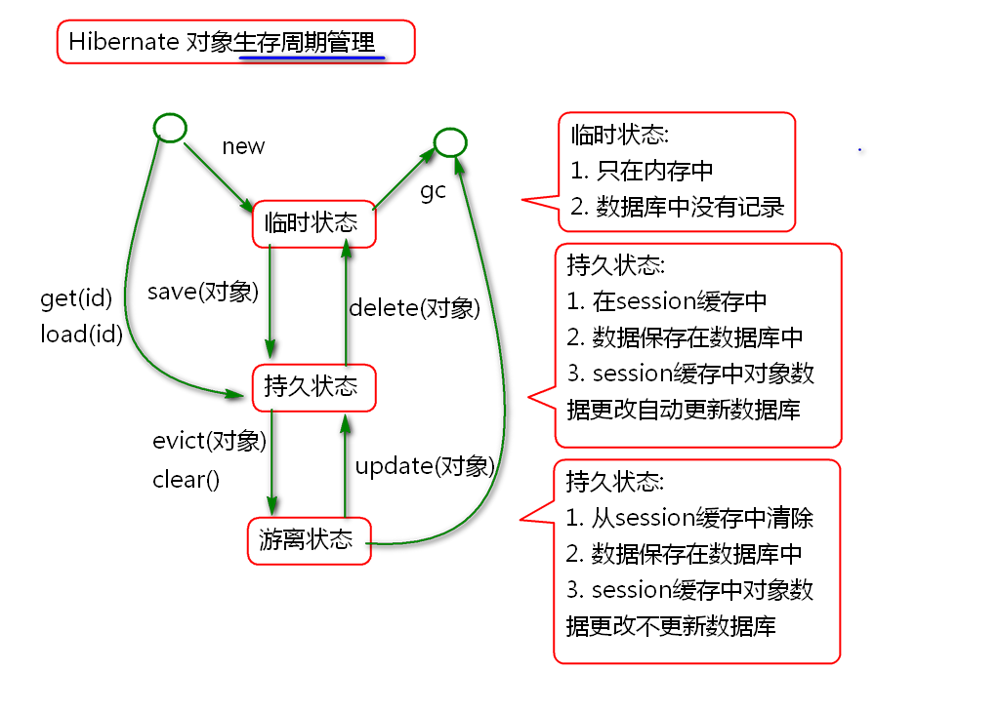

Hibernate 的核心接口 Session 提供了对象的CRUD方法, 可以实现对象的增删改查操作.
案例:
@Test
public void testSave(){
Transaction tx =
session.beginTransaction();
User user = new User(
1, "Tom", 5, "北京");
session.save(user);
//user = new User(
// 2, "Jerry", 5, "上海");
//session.save(user);
//user = new User(
// 3, "李洪鹤", 6, "北京");
//session.save(user);
tx.commit();
}
@Test
public void testGet(){
User user = (User)session.get(
User.class, 1);
System.out.println(user);
}
@Test
public void testUpdate(){
Transaction tx=session.beginTransaction();
User user = (User)session.get(User.class, 1);
user.setName("范萌萌");
session.update(user);
tx.commit();
}
@Test
public void testDelete(){
Transaction tx = session.beginTransaction();
User user = (User) session.get(User.class, 1);
session.delete(user);
tx.commit();
}
Hibernate 提供了与数据库无关的HQL. HQL语法接近于SQL:
案例:
@Test
public void testFindAll(){
//sql: select * from t_user
//hql: from User
String hql="from User";
Query query=session.createQuery(hql);
List<User> list=query.list();
for (User user : list) {
System.out.println(user);
}
}
@Test
public void testFindByAddress(){
String addr = "北京";
//sql:select * from t_user
// where t_address=?
//hql: from User
// where address=?
String hql = "from User "
+ "where address=?";
Query query=session.createQuery(hql);
//参数绑定
query.setString(0, addr);
List<User> list = query.list();
for (User user : list) {
System.out.println(user);
}
}
@Test
public void testFindByAge(){
int age=5;
String hql="from User "
+ "where age=:age";
Query query=session.createQuery(hql);
//按照名称替换参数,替换 :age 为 5
query.setInteger("age", age);
List<User> list=query.list();
for (User user : list) {
System.out.println(user);
}
}
@Test
public void testFind(){
//sql: select t_id, t_name
// from t_user
// where t_address=?
//HQL: select new map(
// id as id, name as name)
// from User
// where address=?
String hql="select new map("
+ "id as id, name as name) "
+ "from User "
+ "where address=?";
Query query = session.createQuery(hql);
query.setString(0, "北京");
List<Map<String, Object>> list=
query.list();
for (Map<String, Object> map : list) {
System.out.println(map);
}
}
Hibernate 管理实体对象的声明周期, 有3个状态:

案例:
@Test
public void testState1(){
Transaction tx = session.beginTransaction();
//临时状态
User user = new User(5, "Andy", 7, "上海");
//持久状态
session.save(user);
//持久状态下更新属性将自动更新数据库
user.setName("Wang");
tx.commit();
}
@Test
public void testState2(){
Transaction tx=session.beginTransaction();
//临时状态
User user = new User(8, "范传奇", 8, "北京");
//持久状态
session.save(user);
user.setAge(20);
//强制执行缓存在session中的SQL
session.flush();
//游离状态
session.evict(user);
user.setAge(30);
session.flush();
tx.commit();
}
@Test
public void testState3(){
Transaction tx = session.beginTransaction();
//get返回的对象是持久状态的
User user=
(User)session.get(User.class, 8);
//游离状态
session.evict(user);
user.setAddress("昆明");
//返回持久状态
session.update(user);
tx.commit();
}
Spring 提供了专门管理Hibernate的ORM包.
利用Spring提供的API时候, 访问Hibernate更加方便简洁.
配置步骤:
导入包:
<!-- 添加alibaba的druid连接池依赖 -->
<dependency>
<groupId>com.alibaba</groupId>
<artifactId>druid</artifactId>
<version>1.0.23</version>
</dependency>
<dependency>
<groupId>org.springframework</groupId>
<artifactId>spring-orm</artifactId>
<version>4.1.6.RELEASE</version>
</dependency>
连接配置信息文件 jdbc.properties
jdbc.driver=com.mysql.jdbc.Driver
jdbc.url=jdbc:mysql://localhost:3306/ssh
jdbc.username=root
jdbc.password=root
jdbc.initialSize=5
jdbc.maxActive=50
jdbc.minIdle=0
jdbc.maxWait=60000
jdbc.druid.filters=
jdbc.timeBetweenLogStatsMillis=60000
配置数据源 spring-pool.xml:
<!-- 加载jdbc.properties文件(一般加载多个文件时 可考虑使用此方式) -->
<bean id="propertyConfigurer" class="org.springframework.beans.factory.config.PropertyPlaceholderConfigurer">
<property name="locations">
<list>
<value>classpath:jdbc.properties</value>
</list>
</property>
</bean>
<!-- 配置DRUID连接池(这个连接池的说明: http://github.com 在搜索栏输入druid查找) -->
<bean id="stat-filter" class="com.alibaba.druid.filter.stat.StatFilter"
lazy-init="true">
<description>状态过滤器</description>
<!-- 通过slowSqlMillis用来配置SQL慢的标准 -->
<property name="slowSqlMillis" value="3000" />
<!-- 以日志形式输出执行效率慢的SQL -->
<property name="logSlowSql" value="true" />
<!-- 通过mergeSql属性，合并SQL -->
<property name="mergeSql" value="true" />
</bean>
<!--配置DruidDataSource连接池 -->
<bean id="dataSource" class="com.alibaba.druid.pool.DruidDataSource"
destroy-method="close" init-method="init" lazy-init="true">
<property name="driverClassName" value="${jdbc.driver}" />
<property name="url" value="${jdbc.url}" />
<property name="username" value="${jdbc.username}" />
<property name="password" value="${jdbc.password}" />
<!-- 初始化连接大小 -->
<property name="initialSize" value="${jdbc.initialSize}" />
<!-- 连接池最大数量 -->
<property name="maxActive" value="${jdbc.maxActive}" />
<!-- 连接池最小空闲 -->
<property name="minIdle" value="${jdbc.minIdle}" />
<!-- 获取连接最大等待时间 -->
<property name="maxWait" value="${jdbc.maxWait}" />
<!--配置了maxWait之后，缺省启用公平锁，并发效率会有所下降，如果需要可以通过配置useUnfairLock属性为true使用非公平锁。 -->
<property name="useUnfairLock" value="true" />
<property name="defaultReadOnly" value="false" />
<!-- 通过配置StatFilter,打开监控台统计功能 -->
<property name="proxyFilters">
<list>
<ref bean="stat-filter" />
</list>
</property>
<property name="filters" value="${jdbc.druid.filters}" />
<!--<property name="connectionProperties" value="password=${username}"/> -->
<property name="testWhileIdle" value="true" />
<property name="testOnBorrow" value="false" />
<property name="testOnReturn" value="false" />
<property name="validationQuery" value="SELECT 1 from DUAL" />
<property name="timeBetweenLogStatsMillis" value="${jdbc.timeBetweenLogStatsMillis}" />
</bean>
配置 SessionFactory, spring-hibernate.xml
<!-- 创建 SessionFactory Bean对象 -->
<bean id="sessionFactory" class="org.springframework.orm.hibernate4.LocalSessionFactoryBean">
<property name="dataSource"
ref="dataSource"/>
<!-- 方言参数登录 -->
<property name="hibernateProperties">
<props>
<prop key="hibernate.dialect">
org.hibernate.dialect.MySQL5Dialect
</prop>
<prop key="hibernate.show_sql">
true
</prop>
<prop key="hibernate.format_sql">
true
</prop>
</props>
</property>
<property name="mappingLocations"
value="classpath:mapping/*.xml"/>
</bean>
测试:
public class SpringHbnTestCase {
ClassPathXmlApplicationContext ctx;
SessionFactory factory;
Session session;
@Before
public void init(){
ctx = new ClassPathXmlApplicationContext(
"spring-pool.xml",
"spring-hibernate.xml");
factory = ctx.getBean(
SessionFactory.class,
"sessionFactory");
session = factory.openSession();
}
@After
public void destroy(){
session.close();
factory.close();
ctx.close();
}
@Test
public void testGet(){
User user=(User) session.get(
User.class, 1);
System.out.println(user);
}
}
配置HibernateTemplate, spring-hibernate.xml
<bean id="hibernateTemplate" class="org.springframework.orm.hibernate4.HibernateTemplate">
<property name="sessionFactory" ref="sessionFactory" />
</bean>
<bean id="txManager" class="org.springframework.orm.hibernate4.HibernateTransactionManager">
<property name="sessionFactory" ref="sessionFactory" />
</bean>
<tx:annotation-driven transaction-manager="txManager" />
开发UserDao接口
public interface UserDao {
public List<User> findAll();
public void save(User user);
public void delete(User user);
public void update(User user);
public List<User> findByAddress(
String address);
}
实现Dao接口
@Repository("userDao")
public class UserDaoImpl implements UserDao {
@Resource
private HibernateTemplate hibernateTemplate;
@Transactional
public List<User> findAll() {
return (List<User>)hibernateTemplate
.find("from User");
}
@Transactional
public void save(User user) {
hibernateTemplate.save(user);
}
@Transactional
public void delete(User user) {
hibernateTemplate.delete(user);
}
@Transactional
public void update(User user){
hibernateTemplate.update(user);
}
@Transactional
public List<User> findByAddress(
String address) {
String hql="from User "
+ "where address=?";
return (List<User>)hibernateTemplate
.find(hql, address);
}
}
添加Dao接口组件扫描 spring-hibernate.xml
<context:component-scan base-package="cn.tedu.dao" />
测试:
public class DaoTestCase {
ClassPathXmlApplicationContext ctx;
UserDao dao;
@Before
public void init(){
ctx=new ClassPathXmlApplicationContext(
"spring-pool.xml",
"spring-hibernate.xml");
dao = ctx.getBean("userDao",
UserDao.class);
}
@After
public void destory(){
ctx.close();
}
@Test
public void testFindAll(){
List<User> list = dao.findAll();
for (User user : list) {
System.out.println(user);
}
}
}
原理:
开发业务层接口
public interface UserService {
List<User> list();
}
实现业务接口
@Service("userService")
public class UserServiceImpl
implements UserService{
@Resource
private UserDao userDao;
@Transactional
public List<User> list() {
return userDao.findAll();
}
}
添加业务层接口组件扫描 spring-service.xml
<context:component-scan
base-package="cn.tedu.service"/>
测试...
添加控制器
@Controller
@Scope("prototype")
public class UserAction {
@Resource
private UserService userService;
private List<User> list;
public List<User> getList() {
return list;
}
public void setList(List<User> list) {
this.list = list;
}
public String list(){
list=userService.list();
return "list";
}
}
添加控制器组件扫描 spring-struts.xml
<context:component-scan
base-package="cn.tedu.web"/>
配置struts-user.xml
<struts>
<package name="user" namespace="/user"
extends="json-default">
<action name="list" class="userAction"
method="list">
<result name="list">
/WEB-INF/jsp/user/list.jsp
</result>
</action>
</package>
</struts>
配置struts.xml
<!-- 加载其他的配置文件 -->
<include file="struts-user.xml"></include>
导入 JSTL
<dependency>
<groupId>jstl</groupId>
<artifactId>jstl</artifactId>
<version>1.2</version>
</dependency>
开发JSP
<%@ page contentType="text/html; charset=utf-8"
pageEncoding="UTF-8"%>
<%@ taglib prefix="c"
uri="http://java.sun.com/jsp/jstl/core" %>
<!DOCTYPE html>
<html>
<head>
<meta charset="UTF-8">
<title>用户列表</title>
</head>
<body>
<h1>用户列表</h1>
<div>
<a href="add.action">添加</a>
</div>
<table>
<thead>
<tr>
<th>编号</th>
<th>姓名</th>
<th>年龄</th>
<th>地址</th>
</tr>
</thead>
<tbody>
<!-- 迭代 -->
<c:forEach items="${list}"
var="user">
<tr>
<td>${user.id}</td>
<td>${user.name}</td>
<td>${user.age}</td>
<td>${user.address}</td>
</tr>
</c:forEach>
</tbody>
</table>
</body>
</html>
测试
http://localhost:8080/ssh1/user/list.action